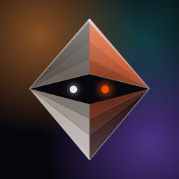

By Elden Studios
This policy explains what Avatalk collects, why, who helps us process it, how long we keep it, and the choices and rights you have. We have tried to describe exactly what the App does, in plain words. If anything here is unclear, write to us.
Your anonymous account. When you first open the App, it creates an account with a random identifier, kept in your phone’s Keychain. It connects your credits, purchases and videos. Our backend records the time, your network address (IP) and device type for each sign-in session, as part of keeping the service secure. Settings shows a short support code (the first 8 characters of this identifier) that you can send us so we can find your account. If you delete the App or reset your phone, a new account is created and we cannot always reconnect you to the old one.
Photos of a face. When you make a video or a restyled “look”, the photo you choose (or take with the camera) is uploaded to our servers and passed to the AI service that animates it or restyles it. Faces are found on your phone, not on our servers. We delete uploaded photos automatically 72 hours after they are last used. We do not use your photos for facial recognition, to identify you, or to build a profile of your face. Saved faces stay on your phone.
Your words (scripts). The text you write is sent to the text-to-speech service that voices it. To add captions, we keep the timing of each spoken character with the record of your video, which means the words are stored with that record until you use Delete my data. When you use “Hear it first”, the preview and its timing are kept for one day so the video can reuse it. When our checks flag the words of a video, we may read those words to check the decision.
Recordings of your own voice for a video. If you record what your video should say, the recording is uploaded to make that video and deleted from our servers automatically after 72 hours.
A voice of your own (voice cloning), if you choose to create one. You read a short permission phrase aloud. That recording is both your consent and the sample your synthetic voice is built from. We send it to our voice provider to create the voice, and keep it only while your voice exists: when you delete your voice, the recording is deleted too. A synthetic voice may be treated as biometric information under laws such as the Illinois Biometric Information Privacy Act, the Texas Capture or Use of Biometric Identifier Act and Article 9 of the UK/EU GDPR. We create one only when you ask, only from a recording you make in the App for that purpose, and only after you have said aloud that you agree. We use it only to speak the words you write in this App. When you delete your voice, the App stops using it at once. The voice model itself is held by our provider, whose copy is kept under its own terms; we are working with the provider to remove it.
Videos and images we make for you. Finished videos, HD versions and restyled images are made by our AI provider and downloaded to your phone. We keep our own private copy of each finished video on our servers, so it can be downloaded again; the App reaches it only through links that stop working within the hour. Our copies and our records of your videos are deleted when you use Delete my data.
Our AI provider keeps what it makes for us only for a limited time. Its copy of a finished video is deleted as soon as ours is saved (and within 7 days in any case); HD versions are deleted within 21 days, restyled images within 7 days, and speech within 2 days. Videos made before 5 October 2026 were made without these limits: Delete my data asks the provider to delete those copies too, and if you write to us we will ask again.
Links you share (“reply links”), if you make one. When you share a video as a link, a copy of that video is uploaded and can be watched by anyone who has the link, together with the “From” name on your card if you added one. A link works for 30 days, or until you tap Stop sharing or delete the video; the copy is then deleted. Before a link is made, your words are checked automatically for harmful content (by an AI model or a word list); the words are not kept. For people who open your link we count opens and store-button taps, and use a one-way scrambled form of their network address (never the address itself) to limit abuse; those counters are deleted after 2 days. A link’s record, without the name or the video, is kept for up to 180 days after the copy is deleted so we can see whether links work. Anyone can report a link. A reported video is hidden at once and reviewed by us within 48 hours; reports and any note written with them are sent to our team’s internal alerting channel. People who break our rules can be stopped from making links.
Blocking a sender, if you do. Anyone sent a link can block whoever made it. A block made in the App keeps your account, theirs, the link it was made from and the date: their links no longer open for you in the App, and their replies no longer reach you. A block made on the link page keeps only their account, the link and the date, and stops that video playing in that browser. Each new block is sent to our team’s internal alerting channel, without saying who blocked.
Purchases and credits. Payments are handled by Apple; we never see your card details. We store your credit balance and, for each purchase, Apple’s transaction identifiers and the credits it added. Your anonymous account identifier is sent to Apple with each purchase so it can be matched to your account.
How you use the App. We record usage events, such as the App being opened, a video being requested, finished or watched, a share, a purchase screen being shown, or a button such as “Say it again” being tapped. Each event carries your anonymous account identifier, the time, the App version, and simple details such as which button or which kind of share. It never contains your words, photos or recordings. Some events, such as opening the App, also carry the country of your App Store account and your phone’s language. We use these to see what works and what doesn’t. They are not used for advertising and are deleted automatically after 180 days.
Crash reports. If you have chosen to share analytics with app developers in your iPhone’s settings, Apple gives the App crash and hang reports, which we store with your anonymous account identifier and App and iOS versions to fix problems.
Notifications. The App registers your device with Apple’s notification service so it can tell you when a video is ready, when someone replies to your link, or show progress on your Lock Screen. We store the device token with your account to send these. You choose whether notifications are shown.
Special days and drafts. Birthdays and other days you add, your reminders, drafts, editor projects and the names you type on a card stay on your phone. We don’t receive them (except the “From” name sent with a link, described above).
Messages to support. If you email us, we receive what you write and the details the App adds (your support code, App version and iOS version), and use them to help you.
We use these service providers, only to provide the App:
We do not sell your personal information, and we do not share it for advertising.
| What | Kept |
|---|---|
| Photos and voice recordings uploaded to make a video or a look | 72 hours after last use, then deleted automatically |
| Your voice-permission recording | While your voice exists; deleted when you delete the voice |
| “Hear it first” previews | 1 day |
| Records of your videos (including caption timing) and crash reports | Until you use Delete my data |
| Link copies | 30 days at most, or until you stop sharing or delete the video |
| Link records (without the name or video) | Up to 180 days after the copy is deleted |
| Abuse-limit counters about link viewers | 2 days |
| Senders you blocked | Until you use Delete my data, or either account ends |
| Blocks made on the link page | For as long as the blocked sender’s account exists |
| Usage events | 180 days |
| Credit balance and purchase records | For as long as your account exists, and as required for accounting |
| Your agreement to send data to the AI providers (which version you agreed to, and when) | For as long as your account exists |
| Our private copy of each finished video | Until you use Delete my data |
| Copies held by our AI provider | A finished video’s: deleted once our copy is saved, 7 days at most. HD versions: 21 days at most. Restyled images: 7 days at most. Speech: 2 days at most |
Depending on where you live, you may have the right to access, copy, correct or delete your data, to object to or restrict how it is used, to withdraw consent, and to complain to a data-protection authority. Email us with your support code and we will respond within 30 days.
Our backend is in the European Union (Germany), and our AI and other providers process data in the United States and other countries. Where the law requires it, these transfers rely on appropriate safeguards, such as the European Commission’s Standard Contractual Clauses.
Avatalk is for people aged 13 and over (or the minimum age for digital consent where you live). If you are under 18, you need a parent’s or guardian’s permission. Only upload a photo of a child if you are their parent or guardian. If you believe a child under 13 has given us data, contact us and we will delete it.
Data is encrypted in transit, uploads are stored in private storage that only our servers can read, and access to our systems is restricted. No system is perfectly secure, but we work to keep yours safe.
When we change this policy we update the date at the top, and we tell you in the App when a change is significant.
Questions or requests about your data: bazerbashi@elden-studios.com. Please include the support code from Settings.